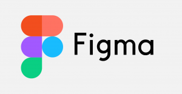

-
Desenvolvedora Front End
-
Vanessa da silva,30 anos
Técnico em informática, ,
SENAC Presidente Prudente
Previsão de formatura em 10/2024
Vanessa da silva,30 anos
Técnico em informática, ,
SENAC Presidente Prudente
Previsão de formatura em 10/2024
Olá! Meu nome é Vanessa da silva, tenho 30 anos atualmente, apaixonada por tecnologia em especificamente por desenvolvimento de software. Comecei a trilhar esse caminho na tecnologia a cerca de 3 anos atrás (mais precisamente em julho de 2020) onde resolvi me aventurar no mundo da programação com um curso de fundamentos de lógica de programação, desde então não parei mais.
• JAVASCRIPT (Udemy)
• Técnico em informática (Senac)
HTML - intermediário
CSS - intermediário

JAVASCRIPT - intermediário

FIGMA - básico


Um agregador de links responsivo, feito com a trilha de conhecimentos
desenvolvido pela Rocketseat, onde personalizei os links como desejei.
Utilizando minhas habilidades de HTML, CSS, JAVASCRIPT ,FIGMA.
Um rastreador de hábitos, feito em uma NLW da Rocketseat, utilizando minhas habilidades de HTML, CSS, JAVASCRIPT ,FIGMA.